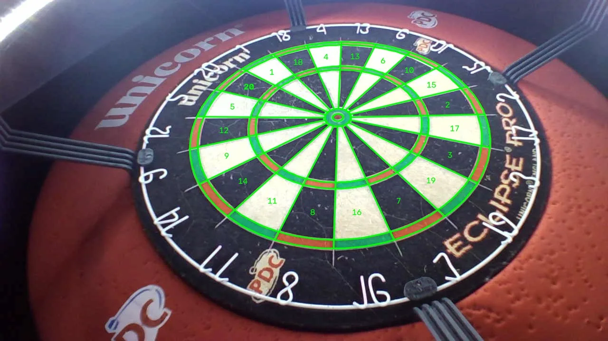

How darts autoscoring with webcams works
Two or three USB webcams round the board, a computer they plug into, and Darts S.A.M works out where every dart landed. Here is how it does it, what you need and how well it works so far.
First, each camera finds the board
Before a camera can score, it has to know where the board is in its picture. With the board empty, you press one button per camera and it finds the red and green rings by itself and fits every wire to them, the bend of the lens included. There is nothing to stick on the board and no clicking on wire crossings. You do it once, and again only if a camera is moved.

Then it watches for each dart
- It waits until the picture is still, then compares it with the still picture from before the throw. What changed is the new dart.
- It fits a line along the dart. The tip touches the board, so the tip is somewhere on that line.
- The lines from two or three cameras cross at the tip: that gives the number and whether it is a single, double or treble.
- When the picture matches the empty board again, the darts have been pulled out, and it moves on to the next player.
A hand in the way, someone walking past or the lights changing are told apart from a dart and left alone. Every dart is shown where it landed, and you can tap one to put it right.
What you need
- Three USB webcams (two will do). The usual choice for scoring darts at home is the small "OV9732 USB camera module" with a 100° lens, which costs a few pounds each. Get the 100° lens, not the fisheye.
- Something to hold them round the board, aimed at the bull. If your board has a light ring, there are printable clips made to fit it.
- A computer near the board for them to plug into: a Mac, or a Windows or Linux PC.
- A phone, tablet or TV to see the scores on. Any you sign in on will follow the game.
The full list, with what to search for, is in the setup guide.
Setting it up
- Put the cameras round the board, evenly spaced, each seeing the whole board including the double ring. Focus each one on the wires.
- Download Darts S.A.M for the computer they plug into and open it.
- Take the darts out and press Find the board for each camera.
- Connect it to your account, and score on any screen you are signed in on. The steps in full.
How well it works so far
In testing on drawn pictures, it scored 120 of 120 darts correctly, 0.4 mm from the true spot on average. On a real three-camera board, finding the board worked on all 30 pictures tried. Scoring real darts works, but wires, shadows and flights still fool it now and then, so expect to tune it for your own board. A dart only one camera can see isn't scored (tap it in), and bounce-outs aren't spotted (press Miss). The full list of what has been tested.
No cameras? You can still play everything by tapping the board on any phone, tablet or computer. And if you are deciding between this and the bigger names, here is how it compares with Autodarts and DartCounter.